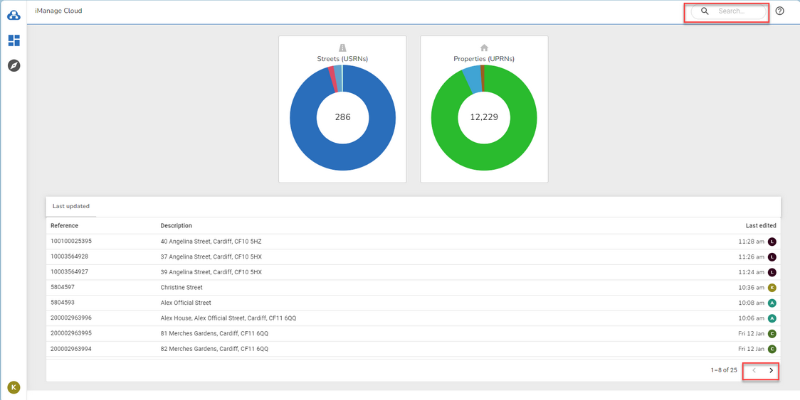

Home page |
Top Previous Next |
|
When you first log in to iManage Cloud you are taken to the Home page. Here you will see two donuts one representing the number of Streets and the other Properties. Below them is a grid detailing the last 25 Streets or Properties that were updated. The first 8 records are displayed but you may use the arrows at the bottom (outlined in red) to display subsequent records. Clicking on an entry in the grid will take you to the Gazetteer page and display the details for the Street or Property you selected. To find any other Street or Property use the Search box at the top right of the page (again outlined in red). This will take you to the Gazetteer page.  The centre of the donut displays the total number of Streets or Properties and, if you hover over a donut, a description of the colour split is displayed which for properties is by BLPU logical status and for streets is the street type e.g.
|